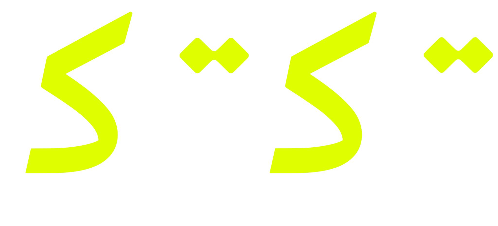
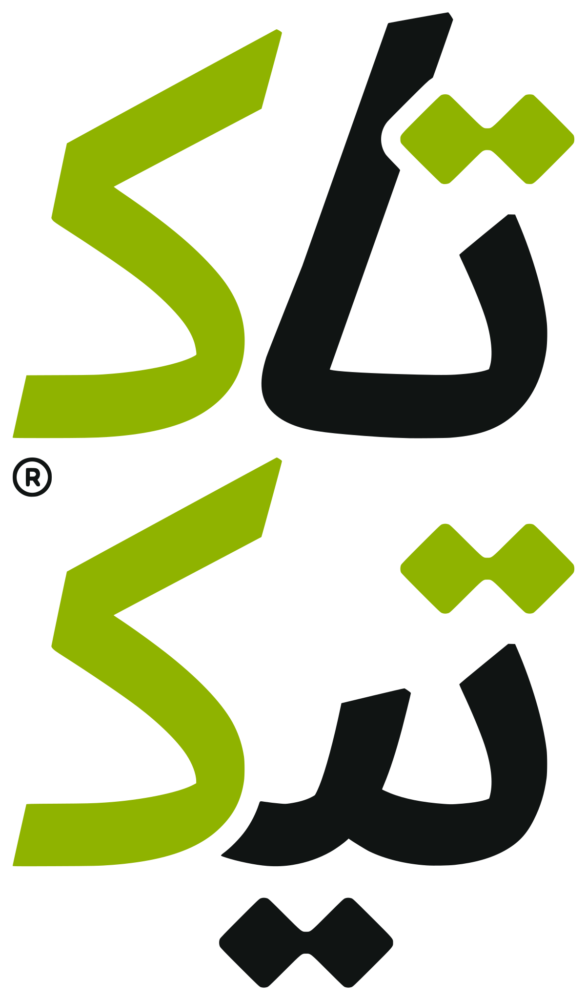
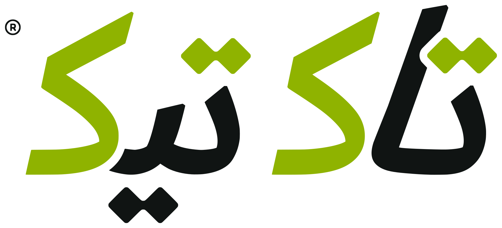
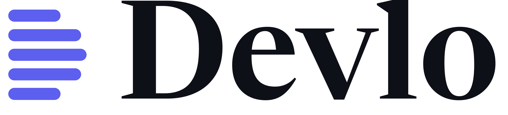
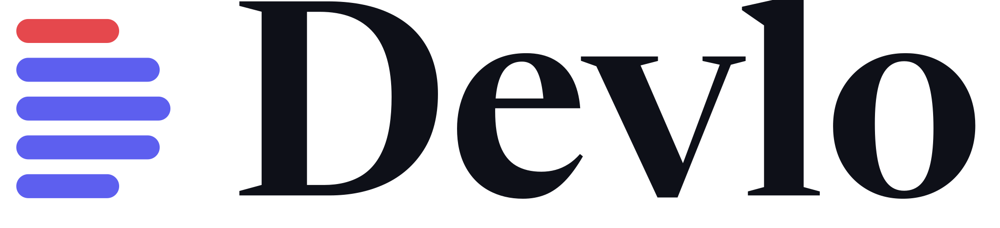

Brand architecture: an endorsed product brand
TakTek is the company; Devlo is a product with its own name, colour, type and voice, always endorsed «by TakTek». We chose endorsement over a branded house (Devlo would read as a TakTek service page) and over full independence (Devlo's credibility comes from the studio that builds and runs every newsroom on it).
Shared
Grid, spacing, radii, neutrals, the mono face for technical labels, motion timing, accessibility rules, the diamond (the Tak) as the smallest unit of both systems.
TakTek only
Ink + the original lime, the original wordmark «تاك تيك», Schibsted Grotesk / Kufam, the diamond lattice, seams with joints, the snap.
Devlo only
Indigo + paper, on-air red, Newsreader / Noto Naskh Arabic, the rundown D, time-coded rows and broadcast lamps, the dot-grid studio wall.
Positioning
| TakTek | Devlo CMS | |
|---|---|---|
| Line | Every piece in its place. · كل قطعة في مكانها. · Her parça yerli yerinde. | Your newsroom, on air. · غرفة أخبارك على الهواء. · Haber merkeziniz yayında. |
| Statement | A software and digital studio that designs, builds and runs websites, apps and systems, in Arabic, English and Turkish, from one team. | The Arabic-first newsroom CMS: breaking news, live coverage, Telegram/RSS intake and translation between editions, with each newsroom on its own domain, database and front end. |
| For | Organisations, publishers and media that need a product built and kept running, often in more than one language. | Editors, desk managers and publishers at Arab and regional news organisations; decision-makers choosing a CMS. |
| Proof | Seven live projects with screenshots and links; the client portal; the stack behind them. | Six live newsrooms; the public demo; module list taken from the codebase. |
| Personality | Precise, plain-spoken, calm, a little playful in motion. | Editorial, composed under pressure, procedural, exact about time. |
TakTek logo: the original wordmark
The logo is TakTek's Arabic wordmark «تاك تيك», kept exactly as it was drawn: white letters, a lime ك and diamond dots. The files below were traced from the 2025 master (raw/original-logo/taktek-logo-original.png) by tools/trace_logo.py; nothing was redrawn. The dots of ت and ي are pairs of diamonds meeting at a point. That pair, the Tak, is the unit the rest of the system is built from.








Rules
Do
- Use the original on ink wherever you can; it was drawn for a dark ground, which is why the site's header is ink.
- On light grounds use the light files: ink letters and a darker lime (#8FB300) for the ك and dots.
- In English and Turkish layouts, set "TakTek" in Schibsted Grotesk beside the wordmark, after a hairline.
- Keep clear space of one dot pair on every side.
Don't
- Retype «تاك تيك» in a font or redraw any letter. Always use the files.
- Recolour the ك or the dots, or put #DFFF00 on white (1.1:1, it disappears).
- Mirror, skew or stretch the wordmark, or break the two words apart except in the one-line file.
- Add gradients, outlines, shadows or a container shape.
Clear space
Colour
TakTek is ink and white with one signal; the signal marks the moment something fits (the dots, the primary action, the current language). Devlo is paper and indigo from its own panel, with red reserved for on air. Neutrals are cool and shared. No warm paper, no gradients on controls.
TakTek
#101413 · --tt-inkText, surfaces, logo#DFFF00 · --tt-signalOn ink only; 16.3:1 on ink#4F6600Signal as text on white, 6.5:1#EEF9C4Highlight panels#FFFFFFCanvasShared neutrals
#F3F5F4#E8ECEA#D5DBD8#535B57 · 7.0:1#232927Devlo
#5D5FEF · --dv-indigoThe panel's own brand token#3134B8Indigo as text, 9.1:1 (8.3:1 on paper)#F4F5FA · --dv-paperThe studio wall#0E1018 · --dv-night#E5484D · --dv-liveLive state only#E8A317 · --dv-amberWaiting, scheduledStatus colours inside the Devlo application follow the panel's DSX tokens (public/assets/dashboard/css/custom-style.css in the Devlo repo); the marketing palette above is a strict subset of them, so marketing and product never disagree.
Type
Self-hosted, subset WOFF2 from Google Fonts (OFL). Arabic and Latin faces are chosen per brand, not shared, so each brand keeps its voice in every script. IBM Plex Sans Arabic and Cairo are not used.
Scale and rules
| Role | Latin / Turkish | Arabic |
|---|---|---|
| Hero | clamp(2.5rem, 6vw, 5.2rem) · 790 · line 1.04 · tracking −0.035em · max 13ch | clamp(2.2rem, 5vw, 4.3rem) · Kufam 800 · line 1.38 · no tracking, ever |
| Section title | clamp(1.9rem, 4.2vw, 3.25rem) · 750 | same size · Kufam · line 1.38 |
| Body | 1.0625rem · line 1.6 | 1.0625rem · Vazirmatn · line 1.85 |
| Kicker / labels | Geist Mono 13px uppercase, +0.04em | Vazirmatn 600, no uppercase, no tracking |
| Turkish | Hero one step smaller and 17ch wide; set lang="tr" so uppercase gives İ, not I. | |
| Arabic | No tashkeel in interface copy; Latin words inside Arabic in <bdi>; letter-spacing 0 on all Arabic. | |
Graphic language
Recognisable without the logo. Every element comes from the same idea, parts fitting.
| Element | What it is | Where |
|---|---|---|
| The Tak | Two rounded diamonds side by side. The smallest brand unit. On hover the pair snaps shut. | Kickers, list markers, contact links, the client portal |
| Joints | Hairline seams between pieces of content, with a single diamond where seams meet. | Practices, steps, principles, practice blocks |
| The lattice | A 45° grid of diamond cells on ink with the wordmark at its centre; labels name the eight services. In 3D the wordmark is extruded from its own outlines and its dots fly in and click into place. | Home hero; can be cropped for presentations and social |
| Device frames | Real screenshots: desktop in a 16px-radius frame, phone in an ink bezel overlapping its corner. | Work, home, case material |
| Index numbers | Mono numerals 01–05 and giant mono indices on practice pages. | Section heads, practices, projects |
Imagery
Only real material: live sites, the real Devlo sign-in, real product screens. No stock photography, no invented dashboards, no fake devices showing features that do not exist. Screenshots carry their capture date.
Motion
Motion says one thing: a part arrives and clicks into place. Hover the pair below.
| Token | Value | Use |
|---|---|---|
--ease-snap | cubic-bezier(.3, 1.45, .55, 1) | Arrival with a hair of overshoot: lattice cells, arrows, hover on the Tak |
--ease-out | cubic-bezier(.2, .7, .2, 1) | Reveals, underlines, sheets |
| Durations | 140 / 260 / 520 ms | Feedback / UI / entrances. Nothing longer than 900ms except the hero's first draw. |
| Direction | Logical | Underlines grow from inline-start; arrows nudge toward reading direction; brand marks never flip. |
| Devlo | Tally pulse 2.4s on live lamps only; rundown rows rise in order | Broadcast language, never decorative loops elsewhere |
| Reduced motion | All animation reduced to 1ms; content always visible without JavaScript | Required |
Voice
TakTek sounds like
- "Every project below is a public site you can open today."
- Short sentences, real nouns, verbs that say what we do.
- Facts before claims; results only when a client confirms them.
Never
- "Cutting-edge", "world-class", "the ultimate", "the future of…"
- Invented numbers, clients, awards or testimonials.
- Literal translation: each language is written, not converted.
Devlo speaks the desk's language: intake, desk, on air, edition, rundown, breaking. Times are written as a rundown (06:00, 12:04).
Devlo identity
The Rundown D: a running order of story lines whose ends draw the bowl of a D. It continues the lines of the previous Devlo mark and the panel's own broadcast-studio sign-in («على الهواء»). The live variant lights the lead story in on-air red.







Application interface (out of this project's scope)
The Devlo panel already uses indigo #5D5FEF / #7E80F8 (dark), page #F4F5FA / #0E1018 and red for on air. To align it with this identity later: replace logo-light.png, logo-dark.png and logo-icon.png in public/assets/dashboard/images/ with exports of devlo-logo.svg, devlo-logo-reverse.svg and devlo-favicon.svg; use the four lamp states (standby, draft, on air, published) for post status; keep Inter for panel UI and use Newsreader / Noto Naskh only for marketing headlines. No change to the panel was made here.
Connecting the two
| Rule | How |
|---|---|
| Endorsement | Devlo's logo is always followed by «by TakTek / من تاك تيك / TakTek'ten» in the shared mono, separated by a hairline. TakTek never appears inside the Devlo mark. |
| Shared DNA | Devlo's status lamps are the TakTek diamond. The endorsement lives in the product's own vocabulary. |
| On the corporate site | Devlo appears as a change of channel: paper, dot grid, indigo, serif headline. It never takes the ink or the signal. |
| Navigation | Corporate nav carries "Devlo CMS" with the Devlo mark; the Devlo page adds its own product bar with the demo action. |
| Calls to action | TakTek: start a project (signal). Devlo: open the demo / talk to the Devlo team (indigo). The contact form pre-selects "Devlo for a newsroom". |
| Languages | Both brands ship in Arabic, English and Turkish together; a new language is added to both at once. |
Accessibility
Target WCAG 2.2 AA. Every text colour pair on the site was measured against its surface: the lowest is 4.8:1 (white on the indigo button, the rundown time codes). Non-text marks such as lamps and seams are at least 3:1. Signal lime never carries text on light surfaces. Focus is a 2px blue ring on every interactive element; targets are at least 24×24px, primary buttons 48px. Every page sets lang and dir; mixed-script runs are isolated with <bdi>; motion respects prefers-reduced-motion.